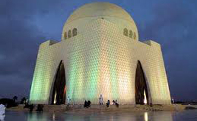
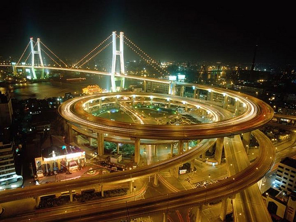
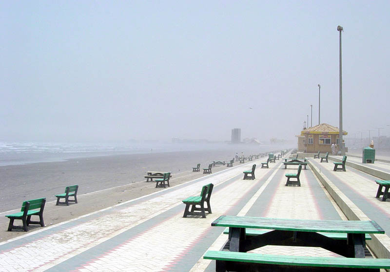
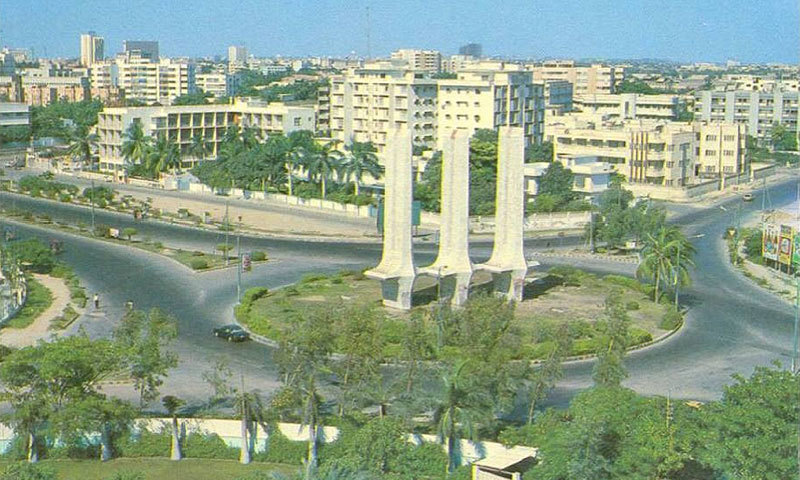

Sindh
Sindh is one of the four provinces of Pakistan, in the southeast of the country. Historically home to the Sindhi people, it is also locally known as the Mehran. It was formerly known as Sind until 1956. Sindh is the third largest province of Pakistan by area, and second largest province by population after Punjab. Sindh is bordered by Balochistan province to the west, and Punjab province to the north. Sindh also borders the Indian states of Gujarat and Rajasthan to the east, and Arabian Sea to the south. Sindh's landscape consists mostly of alluvial plains flanking the Indus River, the Thar desert in the eastern portion of the province closest to the border with India, and the Kirthar Mountains in the western part of Sindh. Sindh's climate is noted for hot summers and mild winters. The provincial capital of Sindh is Pakistan's largest city and financial hub, Karachi.
Sindh has Pakistan's second largest economy with Karachi being its capital that hosts the headquarters of several multinational banks. Sindh is home to a large portion of Pakistan's industrial sector and contains two of Pakistan's commercial seaports– Port Bin Qasim and the Karachi Port. The remainder of Sindh has an agriculture based economy, and produces fruit, food consumer items, and vegetables for the consumption other parts of the country. Sindh is also the centre of Pakistan's pharmaceutical industry.
Sindh is known for its distinct culture which is strongly influenced by Sufism. Several important Sufi shrines are located throughout the province which attract millions of annual devotees. Sindh also has Pakistan's highest percentage of Hindu residents. Sindh's capital, Karachi, is Pakistan's most ethnically diverse city, with Muhajirs, or descendants of those who migrated to Pakistan from India in 1947, making up the majority of the population. The city has seen ethnic tensions boil over into violence on several occasions. Sindh is home to two UNESCO world heritage sites - the Historical Monuments at Makli, and the Archaeological Ruins at Moenjodaro.
The word Sindh is derived from the Sanskrit language and is adapted from the Sanskrit term Sindhu which literally means "river" hence a reference to Indus River. Spelling of its official name as Sind was discontinued in 2013 by an amendment passed in Sindh Assembly. The Greeks who conquered Sindh in 325 BC under the command of Alexander the Great rendered it as Indós, hence the modern Indus. The ancient Iranians referred to everything east of the river Indus as hind from the word Sindh. (In Persian, "s" is sounded "h.") When the British arrived in the 17th century in India, then ruled by the Maratha Empire, they applied the Greek version of the name Sindh to all of South Asia, calling it India.